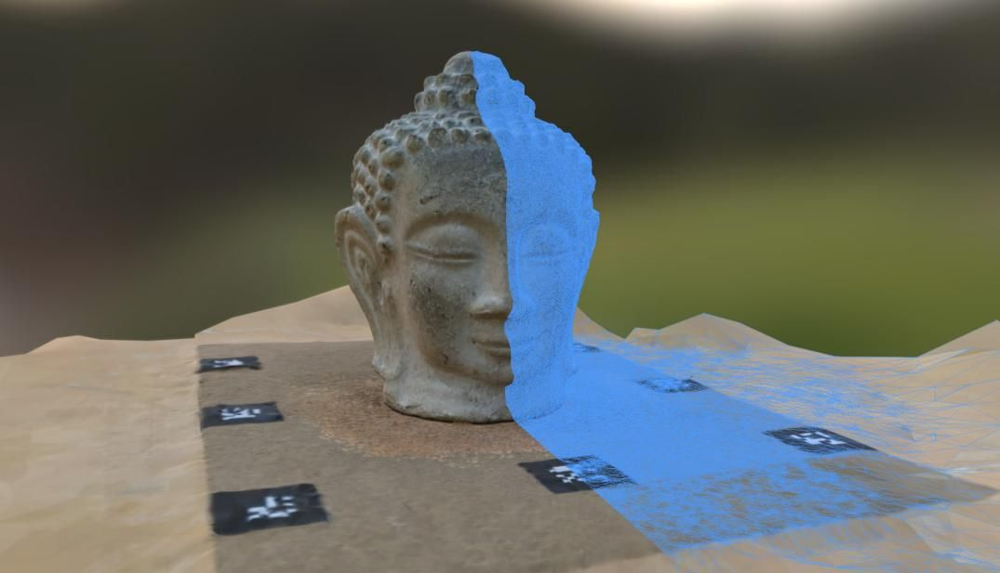
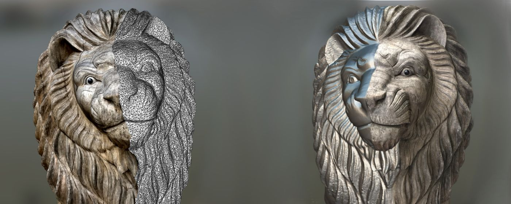
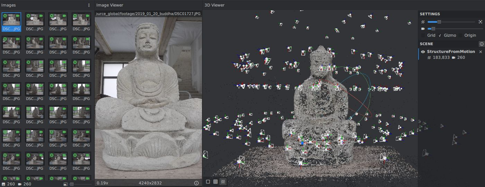
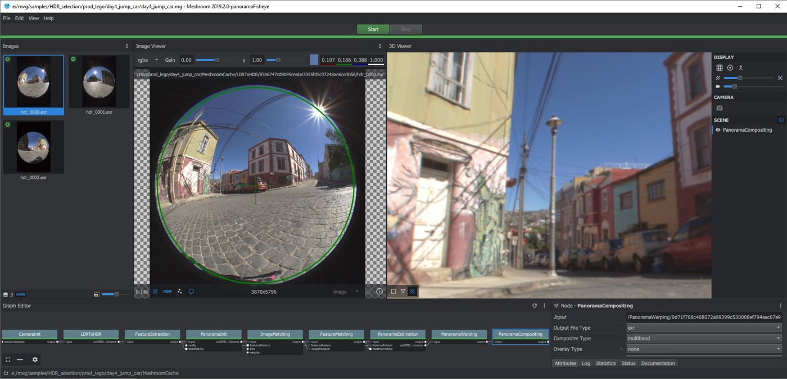
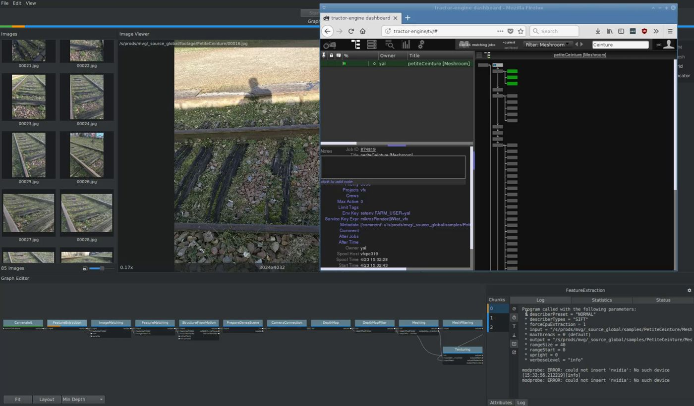
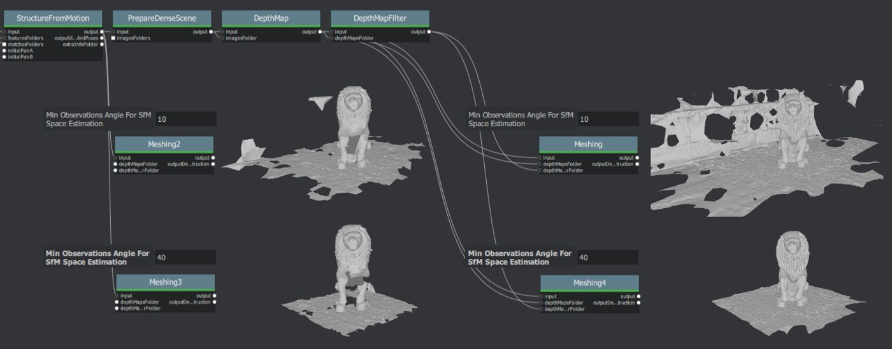
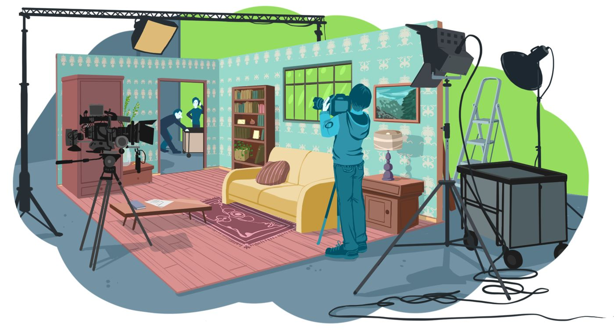
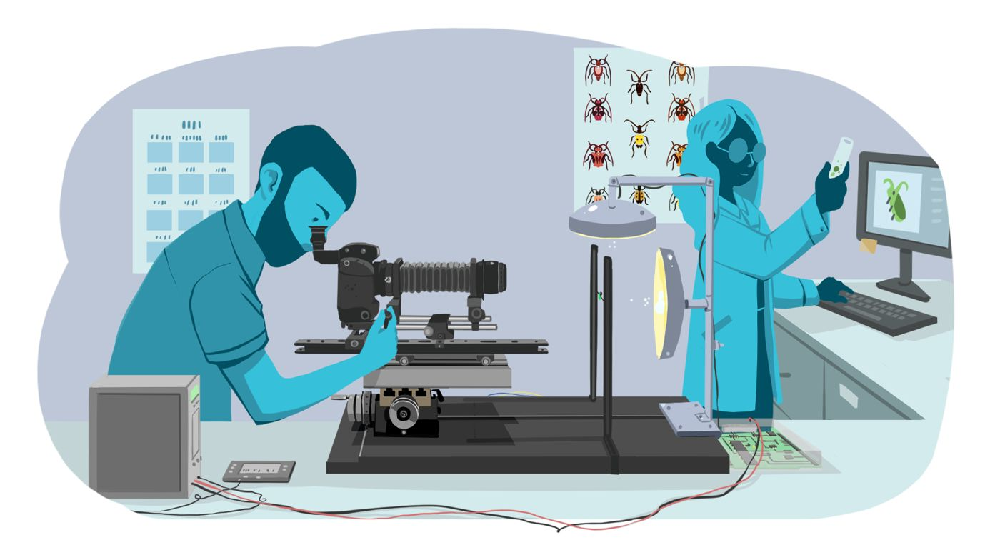
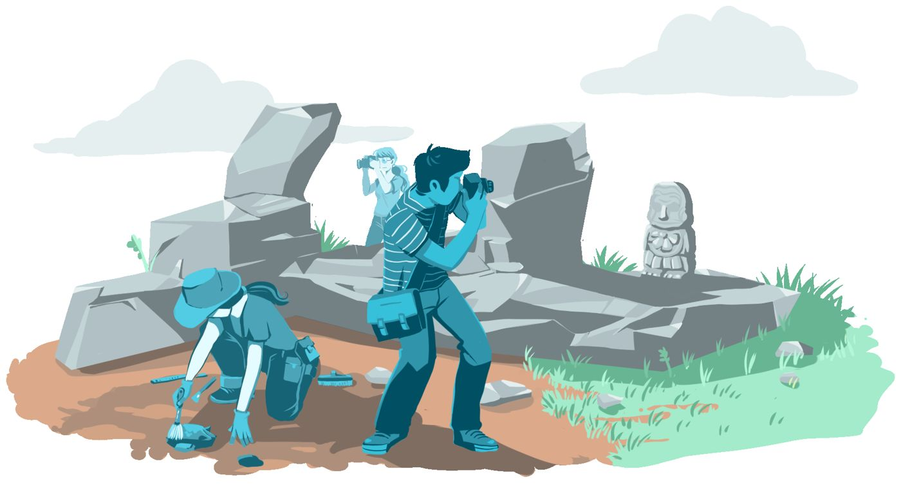

Photogrammetry
Scenes, single objects, turntables and two-sided captures — from raw photos to a textured mesh.
photogrammetryphotogrammetryDraftphotogrammetryObjectphotogrammetryObjectTurntable
AliceVision is a 3D Computer Vision framework for 3D reconstruction, camera tracking and HDR panoramas. Meshroom is its node-based desktop app — start from a ready-made pipeline, or wire your own.

Each template is a Meshroom graph built from AliceVision nodes. Open one, drop in your images, press Start — or fork it into your own pipeline.
Scenes, single objects, turntables and two-sided captures — from raw photos to a textured mesh.
Matchmove from plates, with or without lens calibration, nodal shots, depth-assisted variants and LiDAR.
Merge bracketed LDR exposures into HDR, then stitch panoramas from perspective or fisheye images.
Recover fine surface normals from a fixed camera and varying light — single view or multi-view.
Lens distortion from checkerboards, color charts, RAW development and LiDAR scan meshing.
Combine AliceVision nodes — from FeatureExtraction to ExportUSD — and save any graph as a default template.





Film and VFX, games, science, cultural heritage, architecture, engineering, robotics and more — a few examples below.



From your first images to a textured model, in a few short videos. Open on YouTube ↗
Go deeper: specific workflows, nodes and integrations. Open on YouTube ↗
From the camera obscura to aerial surveys, and from Snellius to the 5-point algorithm: AliceVision stands on a long line of ideas about measuring the world from images.
Explore the timeline →State-of-the-art algorithms that can be tested, analyzed and reused — with the robustness production demands.
Using AliceVision or Meshroom at work? Become a corporate sponsor of the AliceVision Association.
The AliceVision project is supported by the AliceVision Association, a non-profit organization whose ambition is to democratize 3D digitization technologies from photographs.
The association was created in July 2020 by 14 founding members from the European academic and industry sector, who have been collaborating in the field of 3D computer vision for cultural and creative industries since 2010. It considers 3D digitization technologies essential for many applications for the common good, especially for culture and artistic creation.
Computer vision researcher, developer, 3D scanning or photogrammetry expert? You can contribute to the association and help expand the community.